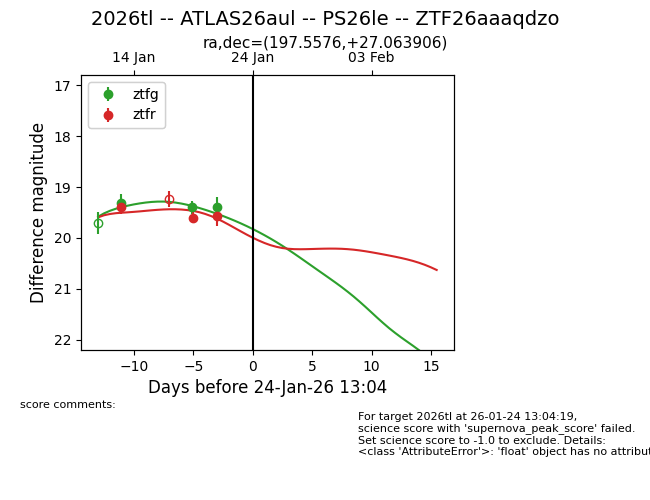
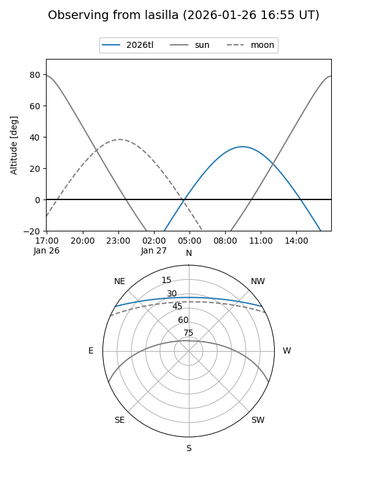
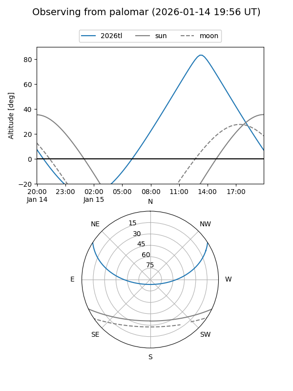
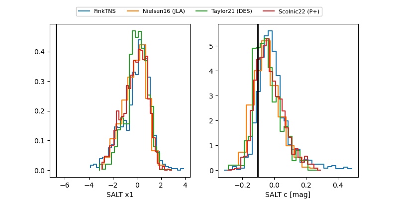

2026tl
Target 2026tl at 2026-01-27 15:46
Aliases and brokers:
FINK: link
Lasair: link
ALeRCE: link
TNS: link
YSE: link
alt names
ZTF26aaaqdzo (ztf,fink_ztf)
2026tl (tns,yse)
ATLAS26aul (atlas)
PS26le (panstarrs)
Coordinates:
equatorial (ra, dec) = 197.5576,+27.06391
equatorial (HMS+DMS) = 13:10:13.81,+27:03:50.06
galactic (l, b) = (33.1214,+85.81731)
Flags:
Photometry:
last ztfg=19.71, ztfr=19.57
4 ztfg, 3 ztfr detections
Lightcurve

Visibility


Additional plots
